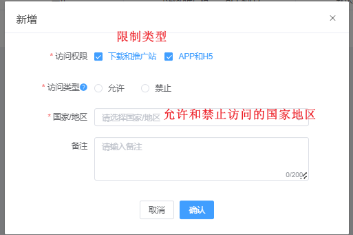
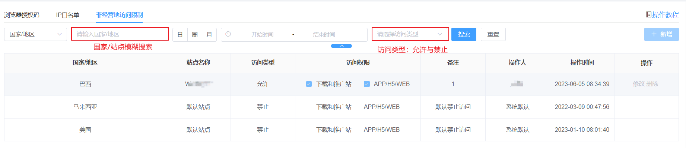

非经营地访问限制
（1）搜索说明：可通过选项或文字搜索出对应国家地区（支持模糊搜索）
（2）新增说明：地区选择请以实际可选项为准，允许或禁止特定国家/地区用户访问平台

（3）页面操作说明：可直接在页面进行访问权限编辑以及删除操作（可参考站点IP白名单操作）

（1）搜索说明：可通过选项或文字搜索出对应国家地区（支持模糊搜索）
（2）新增说明：地区选择请以实际可选项为准，允许或禁止特定国家/地区用户访问平台

（3）页面操作说明：可直接在页面进行访问权限编辑以及删除操作（可参考站点IP白名单操作）
